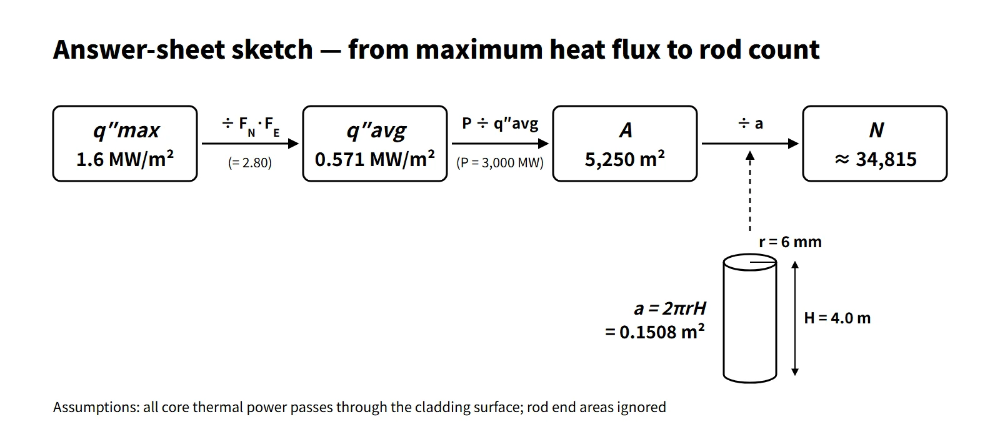

Thermal Hydraulics & Thermodynamics · Practice P-TH-001
Hot Spot Factors and Rod Count — Finding the Total Heat Transfer Area and the Number of Fuel Rods from the Maximum Heat Flux
Divide the maximum heat flux by F_Q = F_N × F_E, divide the core power by the average heat flux, then divide by the side area of one rod.
A pressurized water reactor is to be designed with a core height of 4.0 m and fuel rods of radius 6 mm. The total power (P) is 3,000 MWth, the calculated maximum heat flux (q″max) is 1.6 MW/m², the neutronic hot spot factor (FN) is 1.60 and the engineering hot spot factor (FE) is 1.75. Find the total heat transfer area and the number of fuel rods. (Show your working.)
Given values
| Symbol | Meaning | Value | SI |
|---|---|---|---|
| P | Core thermal power | 3,000 MWth | 3.0×10⁹ W |
| H | Core height (heated length) | 4.0 m | 4.0 m |
| r | Fuel rod radius | 6 mm | 0.006 m |
| q″max | Maximum heat flux | 1.6 MW/m² | 1.6×10⁶ W/m² |
| FN | Neutronic (nuclear) hot spot factor | 1.60 | – |
| FE | Engineering hot spot factor | 1.75 | – |
The unknowns are the total heat transfer area A and the number of fuel rods N.
Strategy
The key to this calculation is "working back from the maximum heat flux to the average heat flux". The area of the whole core is set by the average heat flux, while the design limit is given as a maximum heat flux. The hot spot factors are the bridge between the two.
- The nuclear factor FN expresses how many times the heat flux at the hottest point exceeds the average because of the neutron flux distribution (radial and axial peaking).
- The engineering factor FE reflects the margin by which the local heat flux can exceed the nominal value because of manufacturing tolerances such as pellet density, enrichment and diameter, and cladding outer diameter.
- The two effects overlap independently, so they are multiplied to give the total factor FQ = FN × FE.
The solution order is therefore ① FQ → ② average heat flux → ③ total area → ④ area of one rod → ⑤ number of rods.
![Bar chart of heat flux in MW/m²: average heat flux q″avg 0.571, multiplied by F_N 1.60 to 0.914 with nuclear peaking, then by F_E 1.75 to the maximum heat flux q″max 1.600, with a bracket showing F_Q 2.80 = 1.60 × 1.75 and a note that these are calculation steps, not a heat-flux profile by position. Right: a fuel rod with r = 6 mm cladding outer radius and active heated length H = 4.0 m whose side is the heat-transfer area, and result cards: total heat transfer area A = P ÷ q″avg = 5,250 m², side area of one rod a = 2πrH = 0.1508 m², number of rods N = A ÷ a ≈ 34,815 (34,816 if rounded up)](../../assets/images/concepts/p-th-001-hot-spot-factor-rod-count/fig1-heat-flux-factor-ladder.webp)
Step-by-step solution
① Total hot spot factor
FQ = FN × FE = 1.60 × 1.75 = 2.80
② Average heat flux
Since q″max = FQ × q″avg,
q″avg = q″max / FQ = 1.6 MW/m² / 2.80 = 0.571 MW/m² (571 kW/m²)
③ Total heat transfer area
Assuming that all the heat generated in the core passes through the outer cladding surface into the coolant,
A = P / q″avg = 3,000 MW / 0.5714 MW/m² = 5,250 m²
As a one-line check: A = P·FN·FE / q″max = 3,000 × 2.8 / 1.6 = 5,250 m².
④ Heat transfer area of one fuel rod
Ignore the rod end areas and count only the cylindrical side surface.
a = 2πrH = 2 × π × 0.006 m × 4.0 m = 0.1508 m²
⑤ Number of fuel rods
N = A / a = 5,250 / 0.1508 = 34,815.1
Result: total heat transfer area about 5,250 m²; number of fuel rods about 3.48×10⁴ (34,815; rounded up to 34,816 to secure the required area).

Checks and physical plausibility
- Dimensions: MW ÷ (MW/m²) = m², and m² ÷ m² = a dimensionless count.
- Cross-check with linear power: the average linear power is 3,000 MW ÷ (34,815 × 4.0 m) ≈ 21.5 kW/m; multiplied by 2.8 this gives a maximum linear power of 60.3 kW/m, which matches q″max × 2πr = 1.6 MW/m² × 0.0377 m ≈ 60.3 kW/m exactly.
- Comparison with a real design: as an example (APR1400), a direct estimate with a core thermal power of 3,983 MWt, 241 assemblies × 236 rods = 56,876 rods, an active length of 3.81 m and a rod outer diameter of 9.5 mm gives an average heat flux of about 0.6 MW/m². This is the same order as the 0.57 MW/m² in the problem, so the result is realistic. There are fewer rods than in the APR1400 because the power is lower and the rod diameter (12 mm) is larger, so each rod has more surface area.
- Limits of the assumption: in reality about 2.6 % of the fission energy is deposited directly in the coolant and structures through gamma rays and neutron slowing-down. Applying the in-fuel fraction of 97.4 % gives A ≈ 5,114 m² and N ≈ 33,910. When no in-fuel fraction is specified, the 100 % assumption is the usual simplification, and it should be stated explicitly.
- Size of the factors: in current PWR designs the engineering factor is around 1.03, and peaking is controlled through the FQ limit or the linear heat rate limit in the technical specifications. A value of 1.75 should be seen as a textbook example value obtained by conservatively multiplying several sub-factors.
Common pitfalls
- Wrong direction: multiplying the maximum heat flux by the factor, 1.6 × 2.8 = 4.48 MW/m², and using that as the average. Since maximum = average × factor, you must divide.
- Leaving out FE: applying only FN gives A = 3,000 m² and N ≈ 19,894, far off.
- Confusing radius and diameter: writing the side area as πrH doubles the rod count to about 69,630.
- Unit conversion: not converting 6 mm to 0.006 m, or mixing MW and W, are frequent errors.
- Confusing factor types: the enthalpy rise hot channel factor FΔH is used for the channel exit enthalpy (DNBR); the local heat flux uses FQ.
Variant
Under the same conditions, if only the engineering hot spot factor is lowered to 1.50, what are the total heat transfer area and the number of fuel rods? (Result only.)
- Result: FQ = 2.40, q″avg = 0.667 MW/m², A = 4,500 m², N ≈ 29,842